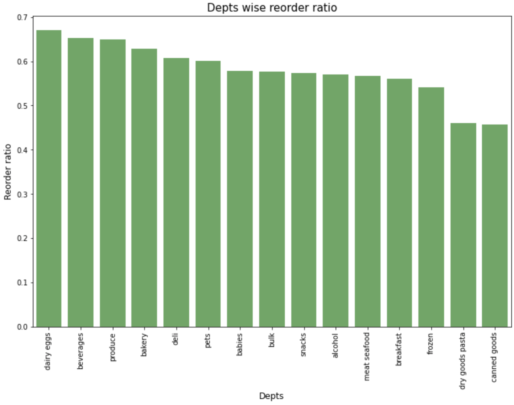

TLDR; Know exactly what questions do you want to know first before you dive in to EDA, and only then you start. otherwise, you'll get lost easily.
This article will be divided into 3 segments :
- Scenario : The problem statement
- Result : How are we tackling the problem ?
- Call-To-Action : What's the solution of the problem ?
---------------------------
Following up from previous article, we'll be discussing on how to explore retail data
Scenario
Now, the company would like to know the overview of their customer purchase behaviours & reordering
Result
With this given scenario, we don't need to build any model, just simple Explatory Data Analysis will be sufficient. Hence we can omit the M in OSEMN. Let's begin
- Obtain
- Scrub
- Model
- Explore & iNterpret
- Which day & at which hour does.....
- customer purchase our products the most?
- customer AVG REORDERED our products the most?
- How many days does the customers usually come back and buy again from us? (and out of all these orders, how many of them are reorders (returning customers) ?)
- How many products are there in a single order ?
- Which products that....
- customer purchase the most?
- customer AVG REORDERED the most?
- Which aisles that....
- customer purchase the most?
- customer AVG REORDERED the most?
- Which depts that....
- customer purchase the most?
- customer AVG REORDERED the most? 
Data given from the company
Data is assumed clean
Remember, OSEMN is an iterative process, hence the sequence of OSEMN is not strict
Also here, we completely ommited, as it's not needed to solve this given task. (It's fine guys! not all solutions need a fancy machine learning models
Since we just doing EDA, result of Explore is our iNterpret
Here's what we trying to find out:
Saturday 12.00-16.00 & Sun 9.00-12.00 has most orders
---------------------------

Highest on Sunday between 6am to 9am (nice)
In general, for any days, highest between 5am to 9am
Interpretation : 0.66 means, 66% of all orders are actually reorders (returning customers)
---------------------------
Customers usually come back to us once every 7 days or 30 days
And out of all those orders, 58.97% are reorders (returning customers). See kaggle for this calculation
---------------------------
10 products per orders. with the most is 5. Note that it dropped exponentially after 10
---------------------------
Fruits (bananas, strawberries) & vegetables (spinach, onions, zucchini)
---------------------------
Completely different than in qty wise. Top 3 are vege wrappers, pads, energy shots, chocolate bar. No fruits & veges at all in top 15
---------------------------
Fruits & Vege
---------------------------
Fruits & vege might be highest in qty, but reordering wise, milk & sparkling water at top, (fruits at 3rd, vegetables aren't even at top15)
---------------------------
Top3 are Produce, dairy egg, snacks
---------------------------
Top3 are Dairy Eggs, Beverages, Produce, quite similar as qty
---------------------------
Call-To-Action
Management can discuss further with supplier of their highest selling products to get better discount, since its selling alot, hence they can afford to buy bulk (and enjoy bulk discount)
Management can send few people to the least selling dept & aisles and find out why isn't selling. (Perhaps other competitor sell better pricing, or it places at a very far corner, or...?)
Final words from Dwi
You can explore the code here.
Again, this is meant to be as introductory EDA, hence it's very simple & straight forward. Read this article if you wish to do slightly more advanced analysis